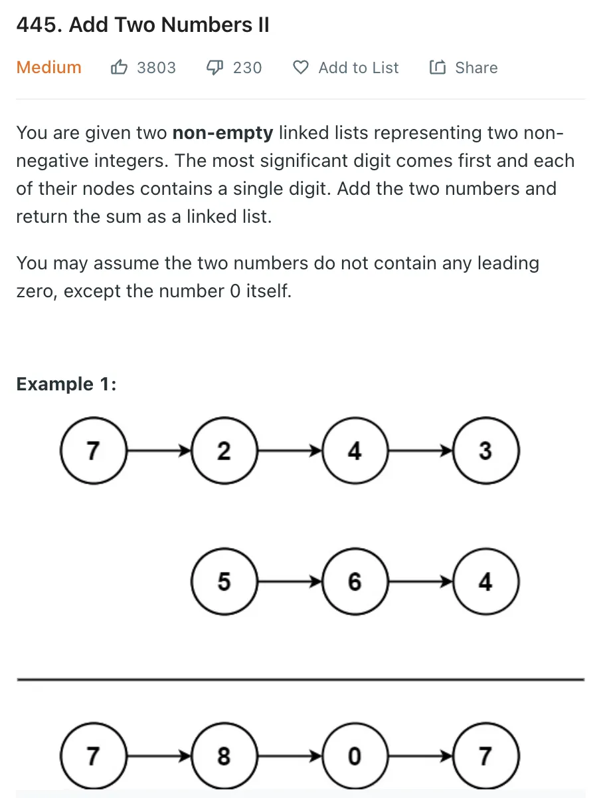
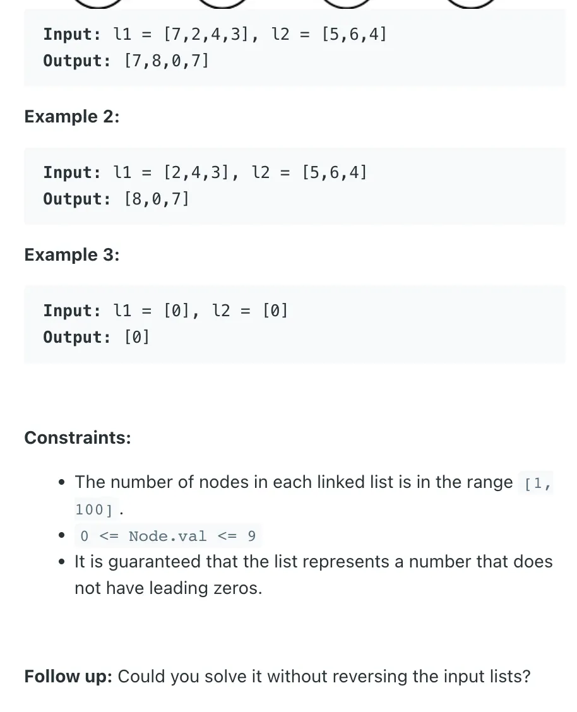

445. Add Two Numbers II
考過的公司：Amazon
Question


✍🏽 My Solution
class Solution {
public ListNode addTwoNumbers(ListNode l1, ListNode l2) {
ListNode first = reverse(l1);
ListNode second = reverse(l2);
ListNode f = first;
ListNode s = second;
while (f.next != null || s.next != null) {
if (f.next == null) f.next = new ListNode(0);
if (s.next == null) s.next = new ListNode(0);
f = f.next;
s = s.next;
}
return merge(first, second);
}
private ListNode merge(ListNode first, ListNode second) {
int reminder = 0;
ListNode dummy = new ListNode(-1);
dummy.next = first;
while (first != null) {
reminder += (first.val + second.val);
first.val = reminder % 10;
reminder = reminder / 10;
if (first.next == null && second.next == null) {
if (reminder > 0) {
first.next = new ListNode(reminder);
}
break;
}
first = first.next;
second = second.next;
}
return reverse(dummy.next);
}
private ListNode reverse(ListNode head) {
ListNode prev = null;
ListNode cur = head;
while (cur != null) {
ListNode tmp = cur.next;
cur.next = prev;
prev = cur;
cur = tmp;
}
return prev;
}
}
Solution #1 [Reverse]
Runtime: 3 ms, faster than 89.83% of Java online submissions for Add Two Numbers II. Memory Usage: 47.7 MB, less than 62.20% of Java online submissions for Add Two Numbers II.
class Solution {
// 3 4 2 7
// 4 6 5
// 7 0 8 7
// tmp = 1
public ListNode addTwoNumbers(ListNode l1, ListNode l2) {
ListNode first = reverse(l1);
ListNode second = reverse(l2);
ListNode f = first;
ListNode s = second;
while (true) {
if (f.next == null && s.next == null) break;
if (f.next == null) f.next = new ListNode(0);
if (s.next == null) s.next = new ListNode(0);
f = f.next;
s = s.next;
}
return cal(first, second);
}
private ListNode cal(ListNode first, ListNode second) {
ListNode dummy = new ListNode(-1);
ListNode cur = dummy;
cur.next = first;
int reminder = 0;
while (first != null && second != null) {
reminder += (first.val + second.val);
first.val = reminder % 10;
reminder /= 10;
if (first.next == null && second.next == null) {
if (reminder > 0) {
first.next = new ListNode(reminder);
}
break;
}
first = first.next;
second = second.next;
}
return reverse(dummy.next);
}
private ListNode reverse(ListNode head) {
ListNode prev = null;
ListNode cur = head;
while (cur != null) {
ListNode tmp = cur.next;
cur.next = prev;
prev = cur;
cur = tmp;
}
return prev;
}
}
Explanation (in my words)
- How does their solution work?
- 先將兩個list反轉，再來要將兩個練表的長度拉到等長，要補0節點
Solution #2 [Stack]
Runtime: 8 ms, faster than 28.18% of Java online submissions for Add Two Numbers II. Memory Usage: 48 MB, less than 48.78% of Java online submissions for Add Two Numbers II.
class Solution {
public ListNode addTwoNumbers(ListNode l1, ListNode l2) {
Stack<Integer> s1 = new Stack<>();
Stack<Integer> s2 = new Stack<>();
while (l1 != null) {
s1.push(l1.val);
l1 = l1.next;
}
while (l2 != null) {
s2.push(l2.val);
l2 = l2.next;
}
int carry = 0;
ListNode head = null;
while (!s1.isEmpty() || !s2.isEmpty() || carry > 0) {
int sum = carry;
if (!s1.isEmpty()) sum += s1.pop();
if (!s2.isEmpty()) sum += s2.pop();
ListNode newNode = new ListNode(sum % 10);
newNode.next = head;
head = newNode;
carry = sum / 10;
}
return head;
}
}
Explanation (in my words)
- How does their solution work?
- 遍歷兩個練表，分別存進兩個
- 之後開始將兩個棧彈出，將兩個棧的金額加總，頭插置head前面